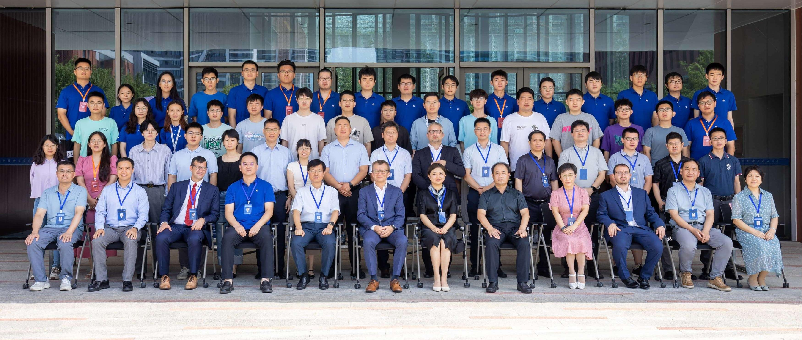

科研人员
数字PET实验室汇集了一批杰出的跨学科人才，构成了我们核心力量和不可替代的资产，支持所有协作研究计划的发展。
我们为全球研究人员提供广泛的专长服务，包括教师和学生。我们设计并制造能够促进重要校园科学研究的传感器的能力已经得到了充分证明。学校在学术研究上的重点与实验室构建原型的经验相结合，促成了创新系统的开发。
人才发展
实验室正在进行多个连接研究人员、教师和学生的科研项目。这些计划包括以开发前沿新技术为中心的研究项目，供学生挑战创新问题的课题研究计划以及由实验室人员主持的培训系列讲座，旨在为相关人员提供专业技能。
研究设施
数字PET实验室设有多个跨学科专业研究团队，由在医学影像、辐射探测、信号重建、放射药理学和临床转化研究等领域各具专长的首席研究员带领。各团队立足医工交叉，独立推进全数字PET系统关键技术攻关，并保持紧密协作；研究覆盖探测器芯片设计、成像算法优化、原型系统研制、临床前动物影像验证及临床转化应用等创新全链条。同时，各团队与全球高校、医疗机构和产业伙伴开展长期联合研究，汇聚互补优势，突破分子影像关键瓶颈，为人类健康提供变革性诊疗技术。
本科实践机会项目
实验室的本科生实践机会计划（UPOP）是一项面向相关专业的大二学生的课外职业发展项目。无论学生旨在从事工业、学术界或公共服务领域的工作，UPOP都为他们首次专业经历的获取和卓越表现提供全面指导，为其长期职业生涯奠定坚实基础。我们支持学生培养学术和研究能力，增强沟通技巧，建立专业网络，并与行业顾问保持持续的导师联系，使他们在职业旅程中脱颖而出。
加入我们的团队
探索教育机会
数字PET实验室致力于建立一个具有严格学术要求和包容性选择机制的培养体系。通过强大的平台资源，我们赋能每个具备潜力、创造力和动力的学生发现其独特的成长位置和发展阶段。
加入团队后，本科生将被纳入内部研究助理培训系统，分配相应的研究资源，并有机会参与在武汉（中国）、合肥（中国）、深圳（中国）、芝加哥（美国）、波佐利/卡塞塔（意大利）及马格德堡（德国）等地举行的全球研究交流活动。
PETLab故事
在数字PET实验室，你会找到一群共同努力使国家和世界变得更好的人。PETLab认识到其成功是通过珍视和支持每个成员的独特才能、想法和经验实现的。